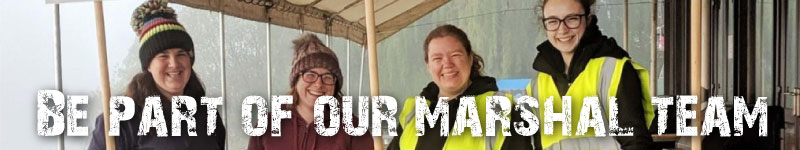

Why Volunteer?
Race marshals are the backbone of all our events. Without our brilliant team of volunteers, none of our events would be possible. We are always looking for enthusiastic volunteers to join our marshal team and help make Go Beyond Challenge events special for every participant.

What You'll Do
As a race marshal, you'll be part of the action. Your responsibilities include:
- Directing runners and cyclists along the course
- Managing road junctions and ensuring participant safety
- Providing encouragement and support to participants
- Staffing feed and water stations
- Helping at the finish line and results area
- Supporting our event operations team
What You'll Get
We appreciate our volunteers and offer plenty in return:
- Free entry to future Go Beyond Challenge events
- Official marshal t-shirt
- Meals and refreshments on event day
- Great experience and new skills
- Meet like-minded, passionate endurance sports enthusiasts
- Be part of something special
How to Apply
Interested in becoming a marshal? It's easy to get involved:
- Email us at admin@gobeyondchallenge.co.uk with "Marshal Volunteer" in the subject line
- Or fill out the form on our Contact page and let us know you're interested in volunteering
- Tell us which events interest you and any preferences you have